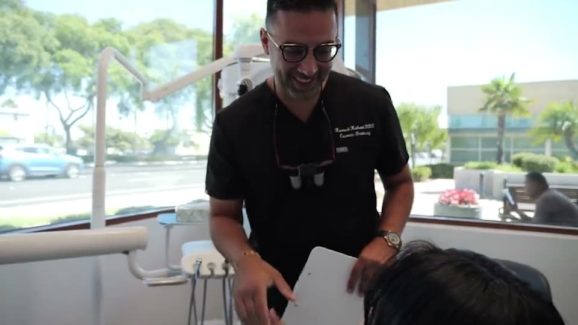
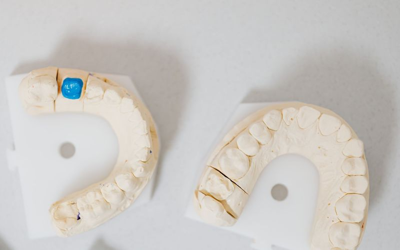
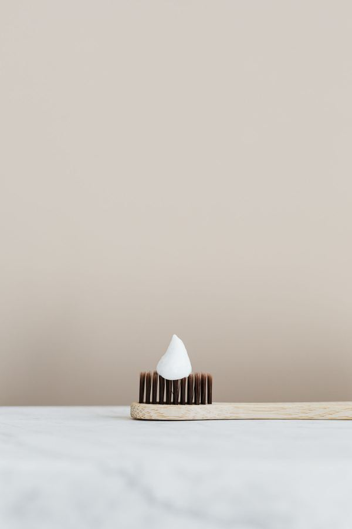
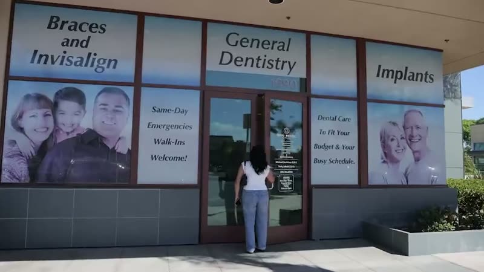
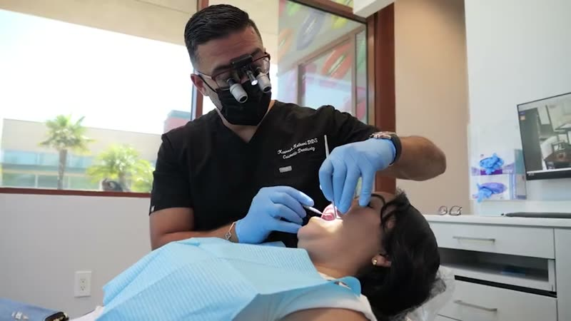
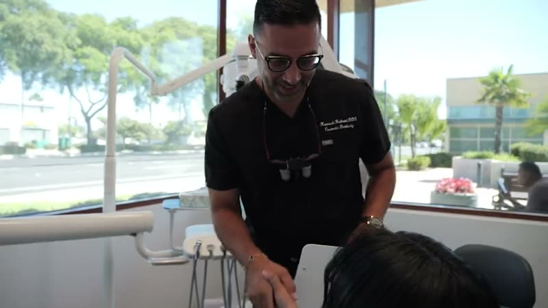
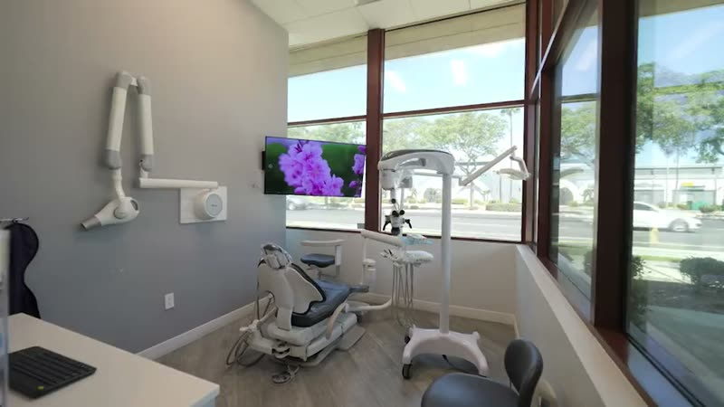
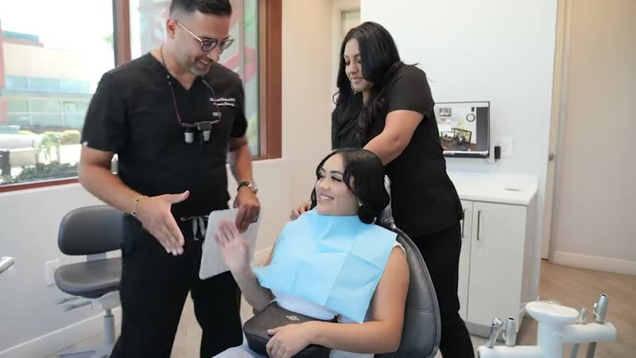
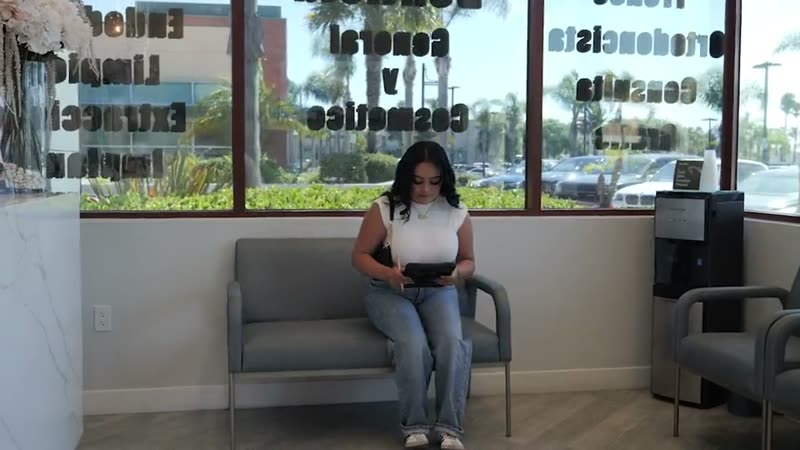
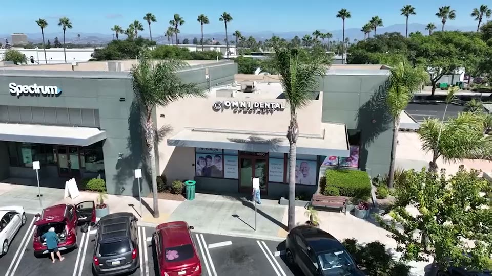

Dental Implants
Titanium implants that replace missing teeth with stable, natural-looking restorations.
Dental implants in OxnardCosmetic dentistry in Oxnard
Brighten a dull or discolored smile with in-office whitening or custom at-home trays, whichever fits your schedule.
Why teeth change color
Teeth can discolor gradually for many reasons, and a brighter, more confident smile is within reach.
Coffee, dark tea, soda and red wine can stain teeth. So can cigarette smoking or chewing tobacco. Certain prescriptions can darken teeth over time, and with age, natural wear of the enamel reveals the yellow dentin underneath.
Whatever the cause, Dr. Keihani offers safe, effective whitening, either at home on your own schedule or in the office for faster results.
Step by step
For fast and dramatic results, in-office whitening is the ideal choice. Here is what to expect.
Dr. Keihani applies a professional-grade whitening gel to your teeth.
A laser activates the gel, lifting stains from your enamel.
In just over an hour, your smile looks significantly brighter.
Most patients find that annual whitening treatments help maintain their bright smiles.
In-office whitening is a good fit for anyone looking for quick, noticeable improvement.

Two ways to whiten
Whether you prefer the convenience of at-home whitening or the immediacy of in-office results, there is an option for you.
What we offer
Routine care, smile makeovers and tooth replacement under one roof at 1690 E. Gonzales Road.
Titanium implants that replace missing teeth with stable, natural-looking restorations.
Dental implants in Oxnard
Porcelain veneers, dental bonding, teeth whitening and smile makeovers.
Oxnard cosmetic dentistry
Clear aligners that straighten teeth gradually, without metal brackets.
Invisalign in Oxnard, CA
Exams, dental crowns and root canals for patients from youngsters to seniors.
All dental services in Oxnard
Prompt, compassionate emergency dental care to address your pain.
Emergency dentist in Oxnard
Treatment that saves a damaged tooth by cleaning out the pulp.
Oxnard root canal treatment
A tooth-shaped cap that restores the shape, size, strength and appearance of a damaged tooth.
Dental crowns in Oxnard, CA
Scaling and root planing, gum grafting and other treatment for gum disease.
Gum disease treatment in Oxnard
Care for wisdom teeth that lack space or come in incorrectly.
Wisdom teeth extractions in Oxnard
Custom night guards and splints to protect your teeth and jaw.
Oxnard TMJ therapyOur approach
Safe, effective whitening that helps restore your smile’s brightness, whatever caused the stains
Keeping your results
Most patients find that annual whitening treatments help maintain their bright smiles.
To make your results last longer, brush and floss regularly, avoid tobacco, and limit foods and drinks that stain teeth.
Use a straw when you drink soda or dark beverages.
At-home whitening
Dr. Keihani creates trays molded to fit your teeth.
A professional-strength gel to use with your trays.
Wear the trays for 30 minutes to overnight, for one to six weeks, depending on your needs.
Why patients choose us
One office on E. Gonzales Road for routine care, smile makeovers and tooth replacement, led by Dr. Kourosh Keihani, DDS.
Patients rate the practice Excellent, based on 555 Google reviews.
Book Online (opens in a new tab)Dr. Kourosh Keihani, DDS, completed his education at the USC School of Dentistry and practiced general dentistry in Beverly Hills before caring for patients in Oxnard.
He is a member of the American Dental Association, the California Dental Association and the Los Angeles Dental Society.
The Oxnard office uses a CT scan, an intraoral camera, digital X-rays and an aerosol machine.
The CT scan is used for CT-guided implant placement.
Omni Dental Specialty accepts Denti-Cal, most PPO plans and HMOs.
Call before your visit to ask about your plan, or about financing.
The office is open for emergency dental appointments, for tooth pain and other urgent problems.
Call (805) 366-6000 to arrange a visit.
Open Monday to Friday from 9am to 5pm.
Saturday visits are by appointment only. The office is closed on Sunday.
General, restorative and cosmetic dentistry for patients from youngsters to seniors.
From exams and crowns to implants, veneers and Invisalign, under one roof at 1690 E. Gonzales Road.
Patient reviews
Dr. Keihani is an excellent dentist, experienced and talented to give solutions to my varied dental needs. I’m very thankful His staff is also very friendly and helpful. A well-run clinic.
“Waiting time was 5mins, office staff friendly, doctor let you know what’s going on, and Alijah is happy! That’s what counts to me!!!”
“I had very a good experience at Omni Dental. The staff is very friendly and caring. I highly recommend this office for dental treatment.”
“Such a great attitude, attention, atmosphere, you can’t ask for more!”
“Crystal is very professional and curtious I highly recommend her as a hygenist office staff nice.”
“The doctor was excellent the owner of the company very knowledgeable very experienced very hospitable he really knows his dental work very affordable I would recommend him to every person go see this doctor doctor that Omni dental Office”
Questions
Still have a question about whitening? Call the office or book a visit online.
Common causes include coffee, dark tea, soda and red wine, smoking or chewing tobacco, certain medications, and aging, as natural wear of the enamel reveals the yellow dentin underneath.
In just over an hour, your smile will look significantly brighter.
Dr. Keihani makes custom trays molded to your teeth and gives you a professional-strength gel. Depending on your needs, you wear the trays for 30 minutes to overnight, for one to six weeks.
Most patients find that annual whitening treatments help maintain their bright smiles.
Brush and floss regularly, avoid tobacco, limit foods and drinks that stain teeth, and use a straw when you drink soda or dark beverages.
Visit us

Visit us
1690 E. Gonzales Road, Oxnard, CA 93036
Monday to Friday, 9am to 5pm
Saturday by appointment only